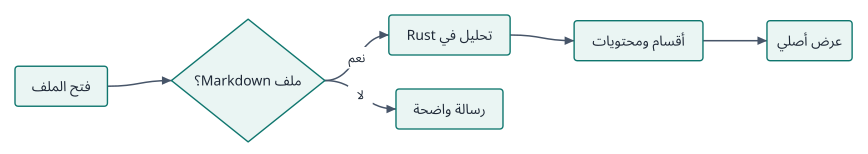
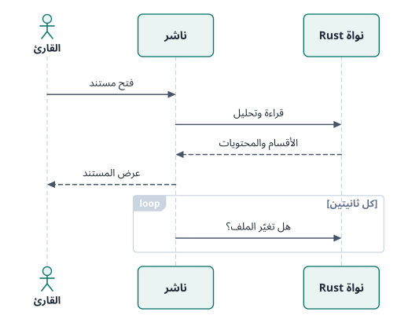

اقرأ Markdown بالعربية، كما ينبغي أن يُقرأ.
Read Markdown in Arabic, the way it should read.
ناشر قارئ مستندات أصلي وسريع لنظام Windows. اتجاه حقيقي من اليمين إلى اليسار، ومخططات Mermaid تُرسم محلياً، وبحث يفهم العربية، وكل ذلك دون أن تغادر ملفاتك جهازك.
Nashir is a native, fast document reader for Windows. True right-to-left layout, Mermaid diagrams drawn locally, Arabic-aware search — and your files never leave your device.
Windows 10 (1809) و11 · مثبّت ونسخة محمولة · مجاني ومفتوح المصدر
Windows 10 (1809) and 11 · Installer and portable · Free and open source
كيف يعمل ناشر
يُحلَّل المستند في Rust ويُعرض بمكوّنات النظام الأصلية، قسماً بقسم.

RTL حقيقي
Real RTL
اكتشاف تلقائي للاتجاه لكل قسم، وفقرات مختلطة عربية وإنجليزية، وأكواد ومسارات وأرقام تبقى سليمة.
Direction detected per section, mixed Arabic and English paragraphs, and code, paths and numbers that stay intact.
سريع مع الملفات الكبيرة
Fast on large files
قائمة افتراضية تعرض ما يظهر فقط؛ مستند 10 ميغابايت يُفتح في ثوانٍ دون تجميد الواجهة.
A virtualized list renders only what is visible; a 10 MB document opens in seconds without freezing.
بحث يفهم العربية
Arabic-aware search
يتجاهل التشكيل والتطويل واختلاف الهمزات والتاء المربوطة، مع مقتطفات وتمييز للنتائج.
Ignores diacritics, tatweel, hamza and taa-marbuta variants, with snippets and highlighted results.
Mermaid محلياً
Native Mermaid
عشرة أنواع من المخططات تُرسم بمحرك Rust دون متصفح، مع نص عربي وتكبير وتصدير SVG.
Ten diagram types laid out by a Rust engine — no browser — with Arabic labels, zoom and SVG export.
تنقل مريح
Easy navigation
محتويات تلقائية مع إبراز القسم الحالي، وتبويبات مثبتة، وإشارات، واستعادة الجلسة وموضع القراءة.
Automatic outline with the current section highlighted, pinned tabs, bookmarks, restored sessions and positions.
قراءة على مقاسك
Reading, your way
حجم الخط والتباعد وعرض النص والخطوط، وسمات فاتحة وورقية وداكنة، ووضع قراءة مريح.
Text size, spacing, measure and fonts; light, paper and dark themes; a comfort reading mode.
مخططات تُرسم محلياً
Diagrams, drawn locally
هذه الرسوم أنتجها محرك ناشر نفسه من شيفرة Mermaid — لا خدمة خارجية ولا متصفح.
These drawings were produced by Nashir's own engine from Mermaid source — no external service, no browser.

اختصارات لوحة المفاتيح
Keyboard shortcuts
| Ctrl + O | فتح مستند | Open a document |
| Ctrl + F | البحث | Search |
| Ctrl + + / − / 0 | حجم الخط | Text size |
| Ctrl + Tab | المستند التالي | Next document |
| Ctrl + W | إغلاق المستند | Close document |
| F11 | ملء الشاشة | Full screen |